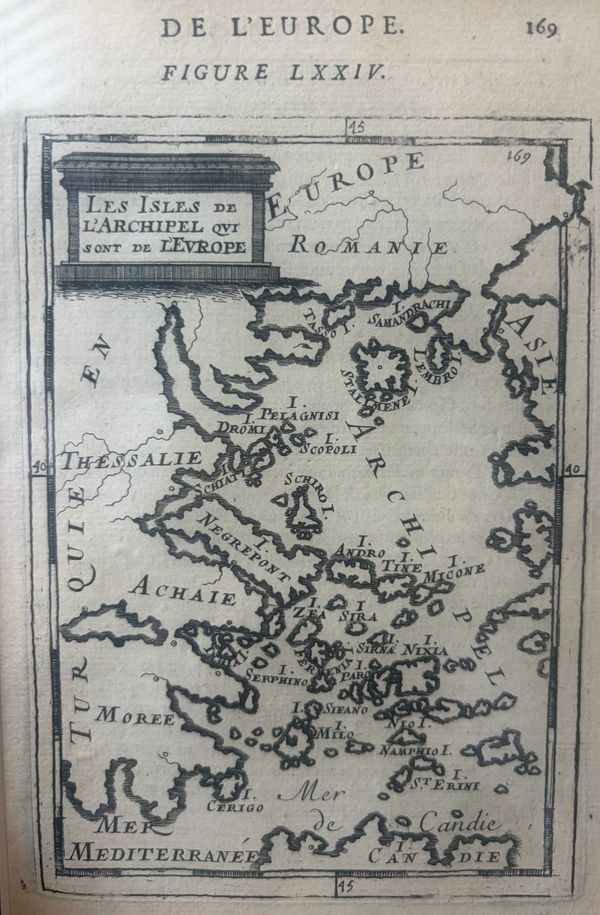

The sheet on your wall
A small copperplate from a five-volume picture of the whole world, printed in Paris in the last calm year before a war that redrew this sea.

What it is
The plate comes from Alain Manesson Mallet's Description de l'Univers, published in Paris by Denys Thierry in 1683 in five small octavo volumes with roughly 680 engraved plates. It was a cosmography in the old sense: the systems of the heavens, ancient and modern maps, town plans, portraits of sovereigns, and the dress and customs of every nation, most of it drawn by Mallet himself.1
This sheet opens Chapter X of the fourth volume, "Des Isles de l'Archipel qui sont vers l'Europe", which begins on page 168. The digitised 1683 volume reads "168 DE L'EUROPE." and then "DE L'EUROPE. 169", the exact running head printed above your map. A sister plate in the same chapter, "Les Isles de l'Archipel qui sont vers l'Asie", covers the eastern half of the sea.2
Mallet says where he got his islands: mostly from Marco Boschini's L'Arcipelago (Venice, 1658), from Davity, and from "several very curious memoirs made on the spot by ships' captains and Knights of Malta". The spellings are the spellings of Venetian pilots.3
How you know it is the 1683 Paris printing
The same copperplates were reused for Frankfurt editions by Johann David Zunner (1684 in German, 1685 to 1686 in French) and by Johann Adam Jung (1719, German). For the Frankfurt printings the plates were re-cut with a German title engraved above the frame, "die Inseln dess Archipelagus, welche in Europam gehören", and an engraved "Fig: LXV." at the top right. The reset Frankfurt text puts the map around page 91.4
Your sheet has a French cartouche only, a typeset "FIGURE LXXIV." and the page number 169. That combination exists only in the Paris first edition. The verso should carry French text; German Fraktur on the back would mean 1684 or 1719.4
It was issued uncoloured. Colour on surviving copies was added later.1 Single impressions of this plate trade for somewhere in the low hundreds of dollars; complete first-edition sets have sold for about six thousand.5
The man who drew it
Mallet was born in Paris in 1630 and died there in 1706. He trained in mathematics and geometry, served as a musketeer in Louis XIV's guard, and in 1663 went to Portugal to fight in the Restoration War, where he rose to engineer and sergeant-major of artillery under Marshal Schomberg and fortified the towns of Arronches and Ferreira. After the peace of 1668 he came home and became mathematics master to the royal pages of the Petite Écurie, the title he prints on the title page. His other books are on the art of war and on practical geometry.6
Reading the names
Almost every label is a Greek name heard through Italian ears. Several were made by sailors fusing a preposition onto the name: "Stalimene" is ἐς τὴν Λῆμνον, "to Lemnos"; "Negrepont" is στὸν Εὔριπον, "to the Euripus", turned into "black bridge" by Venetian folk etymology; Istanbul was made the same way.7
| On the plate | Today | To the ancients | Note |
|---|---|---|---|
| Tasso I. | Thasos | Thasos | Ottoman from 1456. |
| Samandrachi I. | Samothrace | Samothrake | "Samos of Thrace", named by Samian colonists; the sailors' form was "made in ignorance", as an 1854 dictionary sniffed. |
| Lembro I. | Imbros (Gökçeada, Turkey) | Imbros | Probably "l'Imbro" with the article fused on. |
| Stalimene I. | Lemnos | Lemnos | "To Lemnos", heard as one word. |
| Pelagnisi I. | Kyra Panagia (Pelagos) | , | "Open-sea island". Owned by the Great Lavra of Athos since 963. Now inside the Alonnisos marine park. |
| Dromi | Alonnisos | Ikos | Liadromia until 1838, when it was renamed after a misidentified ancient Halonnesos. |
| Scopoli I. | Skopelos | Peparethos | "Lookout crag". Venetian to 1538. |
| Schiati | Skiathos | Skiathos | "Shadow of Athos" is one of three competing etymologies. |
| Schiro I. | Skyros | Skyros | Where Achilles hid among the daughters of Lycomedes, as Mallet reminds his readers. |
| Negrepont | Euboea (Evia) | Euboia | "Land of fine oxen". Venetian until 12 July 1470. |
| Andro I. | Andros | Andros | Venetian lords 1207 to 1566. |
| Tine I. | Tinos | Tenos | Still Venetian in 1683; the last Venetian island in the Cyclades, lost in 1715. |
| Micone I. | Mykonos | Mykonos | "Almost deserted because of the frequent insults of the corsairs", says Mallet. |
| Zea I. | Kea (Tzia) | Keos | Greeks turned the Venetian "Zia" into "Tzia", still the everyday name. |
| Sira I. | Syros | Syros | Largely Roman Catholic under Venice. |
| Sirna | Uncertain | , | Not Delos, which Mallet treats separately as "les Sdilles". The only real Syrna is a stony islet near Astypalaia, 150 km south-east; Boschini or Mallet seem to have moved it. Mallet: "deserted, and its soil very stony". |
| Nixia I. | Naxos | Naxos | Seat of the Duchy of the Archipelago, 1207 to 1566. |
| Fermenia | Kythnos | Kythnos | A corruption of "Thermia", from its hot springs, as Mallet himself explains. |
| Paro I. | Paros | Paros | The marble island. |
| Serphino I. | Serifos | Seriphos | Where Perseus turned the islanders to stone. |
| Engia | Aegina | Aigina | Sacked by Morosini in 1654; Venetian again 1687 to 1715. |
| Sifano I. | Sifnos | Siphnos | Gozzadini lords until 1617. |
| Milo I. | Milos | Melos | Its ancient coins pun on μῆλον, "apple". |
| Nio I. | Ios | Ios | "Nio" is still the local form. |
| Namphio I. | Anafi | Anaphe | The island Apollo "made appear" to the Argonauts in a storm. |
| St. Erini I. | Santorini (Thera) | Thera | Saint Irene, a Venetian-era name after a church. |
| Cerigo I. | Kythera | Kythera | Venetian until 1797; Mallet notes "a good garrison". |
| Candie | Crete | Kreta | From Arabic "castle of the moat", the name of the capital extended to the island. Venetian until 5 September 1669. |
| Moree | Peloponnese | Peloponnesos | "Morea", perhaps from the mulberry. |
| Achaie | Central Greece | Achaia | Used in the old sense of Hellas proper, as opposed to the Morea. |
| Romanie | Thrace, Ottoman Rumelia | Thrake | "Land of the Romans", meaning the Byzantines. |
| Archipel | The Aegean | Aigaion pelagos | Italian "arcipelago", a 13th-century name for this sea specifically, later generalised to any island-strewn water. |
Mallet's engraver and his typesetter did not always agree: the text has "Fermeria" and "Sifanto" where the plate has "Fermenia" and "Sifano". Same islands.8
The sea in 1683
Nearly every island on the map was Ottoman when it was printed. The north had fallen in the 1450s, Euboea in 1470, the Sporades to Barbarossa in 1538, the Cyclades by tribute in 1537 and outright in 1579. Crete had surrendered in September 1669 after a siege of twenty-one years. Venice held Tinos, Kythera and the Ionian islands, and Mallet marks the garrisons.9
Delos was a corsair base. Mallet writes of islands emptied by "the frequent insults of the corsairs and the persecutions of the Turks". Fishing here in 1683 meant fishing within sight of raiders, Barbary and Maltese alike.10
The plate went on sale in the last months of the old order. Vienna held out that September; the Holy League formed in March 1684; Venice declared war in April. Morosini took the Morea and, in 1687, Athens, where a Venetian shell blew up the Parthenon. The Morea went back to the Ottomans in 1715, along with Tinos and Aegina.11
Notes
- Sotheby's 2018 and Bonhams 2023 catalogue entries for the 1683 set; Wikipedia, "Alain Manesson Mallet". See research/01-the-map.md, S6 to S8.
- OCR of the digitised 1683 tome IV, archive.org/details/b33479215_0004.
- Mallet's own text to Chapter X, in the Frankfurt 1686 reprint of the same text, archive.org.
- Götzfried Antique Maps listing of the Frankfurt impression of this plate, vintage-maps.com; Yale Center for British Art record of the Frankfurt set; Internet Archive records of the 1719 Jung edition.
- Dealer comparables in research/01-the-map.md, section 1; Bonhams 21 Nov 2023 lot 25.
- French Wikipedia, "Alain Manesson Mallet"; the 1683 title page.
- 1911 Encyclopædia Britannica, "Lemnos"; Wikipedia, "Negroponte".
- Mallet's text versus the plate, research/01-the-map.md, section 3 note.
- Research/01-the-map.md, section 5, with sources S19 to S72.
- Mallet's text on Mykonos, Anafi and "les Sdilles".
- Wikipedia, "Morean War" and "Ottoman–Venetian War (1714–1718)".